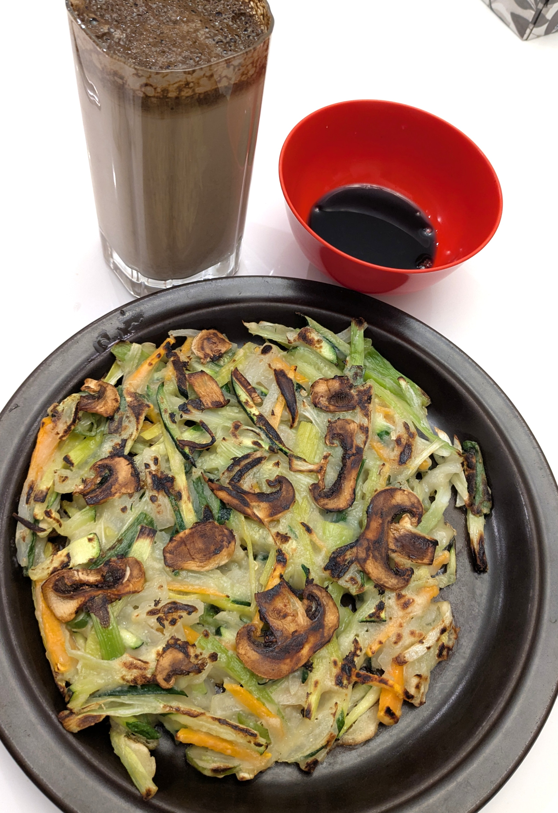
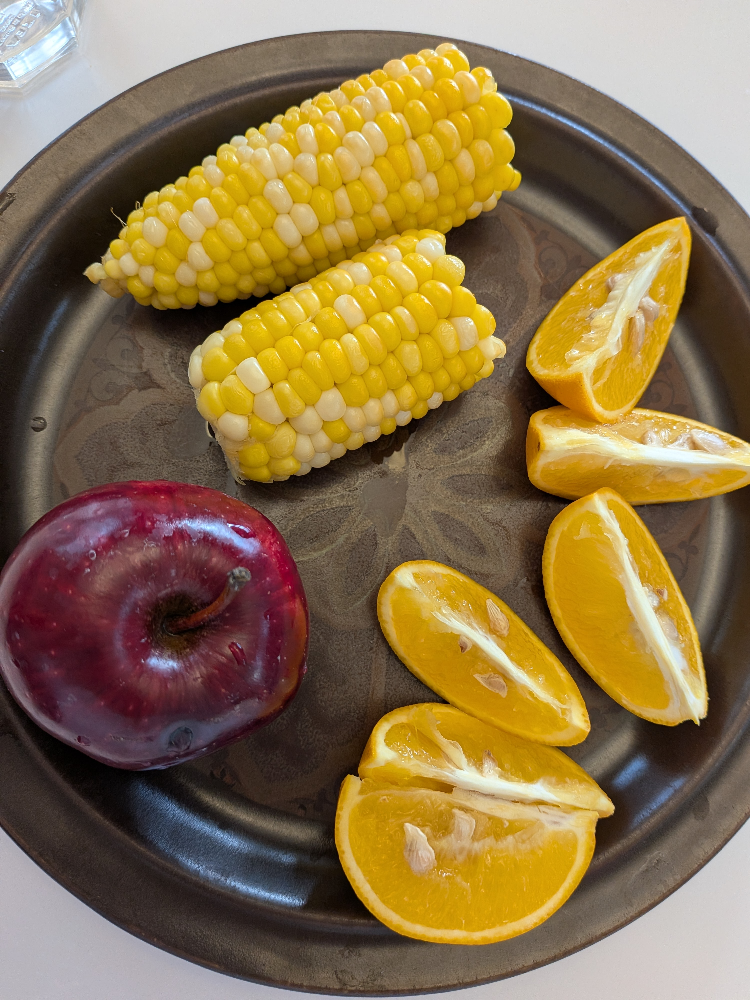
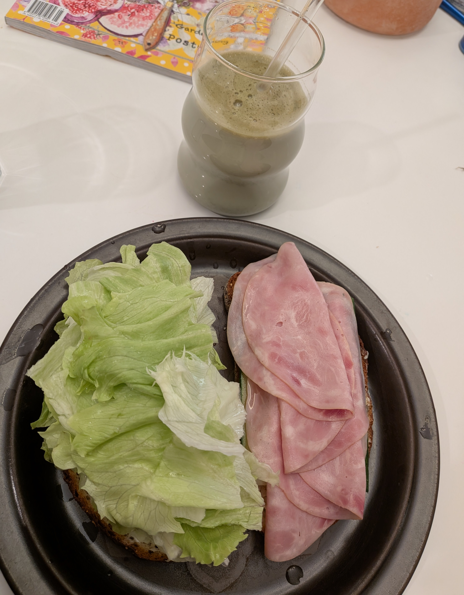
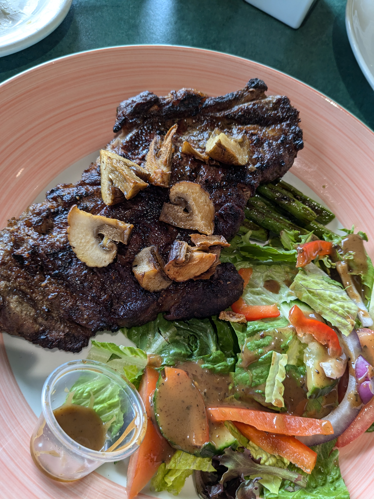
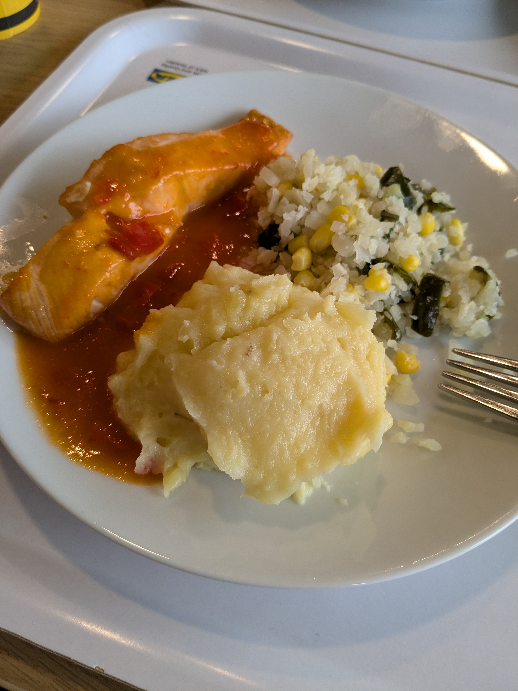

Gut health - A personal study (full)
Sep 26, 2026
Since January 2025 when I had a major health issue on gut health and constipation, I listened to
advice from others, took health and food classes, paid attention my gut reaction, adjusting,
refining my approach. I’ve discovered many things on gut health.
A few benefits from a good gut health, and no more constipation is you will healthily lose some
weight slowly, your skin might become smoother, you will have more energy through out the day,
and there will be less bloating on your belly area, etc.
The most important thing to a healthy gut is to eat a variety of fruits and vegetables.
Different fruits and vegetables have different prebiotics for different gut bacteria, and for
the good gut bacteria too, to improve digestion. And enough daily intake on fruits and
vegetables have accumulation effect, on nurturing a good gut health.
One of the foods that really helped me in the beginning of my journey is Yachaejeon (Korean
vegetable pancake), especially Maangchi’s version which you can find it on YouTube, because of
just how much vegetables it contain, and it tastes good too, so it helps you absorb nutrients
when you can enjoy the food. The picture below is my take on it:

And then I accidentally come across foods like corn, Shiitake mushroom, orange, collard, kiwi, that
helps me with digestion just as much as broccoli, of course broccoli is a very helpful vegetable
for constipation, but for those of you who don’t like broccoli, there are other fruits and
vegetables that can help as well.

Even lettuce is not completely useless. And some other non vegetable foods like bone broth, or
green tea latte, because of how liquid it is, and the protein, fats or herbs taking effect, can
really help with constipation too.

And very importantly, around every half hour to an hour, sip some water, stay hydrated is very
important for not only guy health, but the health of your entire body.
And only eating is not enough, you also need to move your body. If you don’t like exercising, at
least walk around your neighborhood on weekends, take bus to work, or walk the stairs if the
floor is not too high, or park somewhere a bit further from the building you are going to, can
all help with getting movements. And if you have time, you can do some cardio to shake your core
section, or strength training to strengthen your core.
Hope these suggestions can help you with your gut health.
The benefit from coding your own website, what I did in 2026
Sep 26, 2026
In January 2026 I remade my website by coding the site myself instead of use visual tools from
Wix. The result is I have much more control, and the site is much cleaner. All the spaces are
the same width, and frames are crisper, and it is so easy to edit. And most importantly, my fees
went from $550 from Wix, to $45 for the domain only, I can’t say enough how much I like the
experience of coding my website.
More complicated websites need advanced coding, which I’m not sure when I’ll learn it as
I have many things on my plate as this moment.
After I learned the website making, I went a step further and coded a calculator with
the help of AI, but I did code around 60% of it. You can access it in the Portfolio tab, as well
as here.
I also slowly have built an Instagram with constant update on gut health discovery, and little discovery of beauty of life.
Another project I worked on is full book review on Bill Clinton’s book; you can find it
in the YouTube channel linked in the footer of the website.
And that sums up what I did this year.
Regarding AI
Sep 26, 2026
I haven’t done art full time for awhile, but I have done art for many years, since I started
learning art and sketch still life in school. To going to specialized school learning animation
and 3D modelling. Then being an art teacher and work in Bell Canada as design intern. Until now
occasionally draw and paint for fun. That I think AI art could be a tool, and it doesn’t replace
artist’s creation.
Many artists references, and there are many art tools like
premade mods that you can spray paint on, etc. And design can be altering photos with digital
tools. So AI is also just another tool. But ultimately, if you are selling a piece of art or work for studios, AI generated designs
have copy right issues, you can reference, do study on, as practice only.
The art below I referenced AI. It still shows I have drawing skills, the eye to see the proportion,
mix colours, and use drawing techniques, except I didn't design it, and can't claim it as my own. So I label it AI.
this way I share something I’ve done, and viewers will know I can draw but did not design the art.
New health discovery, update on content
Sep 21, 2026
Ok! Apparently meat is really important. so here is the story: in the 1800s, there's a disease,
which is the an enlargement of the neck, known as a "goiter". Which you can search it up, it is very scary.
A French chemist discovered seaweed contains iodine which helps cure this symptom, then I search up on the foods
that contains iodine, and these foods contains it: fish, dairy products, eggs, and meat
So not only we need animal product to consume vitamin B12, we also need iodine from them to avoid have goiter!
And also, I reorganized my blog, the timeline and content I kept is still the same as before, I just took out some content that have nothing to do with
my life now, wasn't a big part of my life, and won't be any time soon, to keep my content concise.
News - Good education to get, good food to eat
Mar 31, 2025
So I've been reading news again, and see some good insights, there's one on what you can study
that is hot now, meaning, people are looking for these workers, so here let me list a few:
project management, financial planner, information security manager, solution architect, cloud
architect, nurse
I personally think nurse is a profession that'll never be replaced by AI, think about it, you
need to feel the patient's veins and plug a needle in it and get blood out, I doubt a robot can
accurately do it.
Talk about nurse, I read on a few food that's healthy, I kept of reading these, and there's 4 I
think is really yummy and healthy at the same time, which is pepper (eat that spice!!), beans,
pasta, salmon.
And other than these four, you can eat a lot of leafy greens, which I'm trying to eat more of it
for my body to recover, as for about a month or two, I nearly only eat meat, and cookies, and
drink 3 cups of coffee a day with Cocoa powder added to it, and create huge tragedies in my
health.
So yeah, stay healthy! So that you can stay employed without hurting your self
Book Review - Food Shed
Jul 22, 2024
Recently I read a book called FoodShed by Dee HobsBawn-Smith, it says how we eat is in a way how
we use the world. Which I totally agree, it wrote about around 60 farms the author had visited.
If we choose to eat organic food, people will use the time to grow more grass to feed the
animals we eat, eat wild, protect wild animal's living environment. Might possibly start making
small changes to the world.
I once heard from a model, we are what we eat, because what we eat made the cells in our body.
So eat more organic, eat more whole food. Even when we eat junk food, use recyclable containers!
Who knows, maybe when we do that not only we become more beautiful, the world also become a more
sustainable place

Healthy Eating Trilogy Part 3
Jul 29, 2024
Today we'll talk about a few things, let's start with what food we should eat more what we
should avoid eating.
First of all, we should eat more fruit and vegetables, it's got antioxidants, vitamins, mineral
and fiber. After we get the most important food out of the way, we should also eat these food
more: fish, broccoli, spinach or leafy greens, kale, nut butter, mangos,
See? These are all pretty yummy, Also eat whole grain instead of refined grains.
And avoid eating these: food with added sugar, low calory sweeteners, no calory sweeteners,
foods high in salt (like canned food, hot dogs, frozen dinner), foods high in mercury (like
shark, I mean who would eat shark, please eat normal fish, bigeye tuna, not sure what that is,
must be a weird fish), unpasteurized food or drink (I think this one everyone agree on)
If you want to know what fish to eat here's a chart, most fish are good to eat, but there are
weird ones:
Eating fish guideline Link
Now let's talk about how we can eat,
First, we can meal prep, there's a lot of benefit, for me, if I meal prep when I want to eat the
food is there, especially if you make it yummy, when you want to buy outside, you just think of
the yummy food you can just heat up and eat, then you won't buy restaurants that meal. It is
healthier because you can follow nutritional guild line when meal prepping, it saves money, and
you'll stress less on weekdays. Secondly, you'll plan it out and use the exactly amount of
grocery you bought; it reduces food waste.
Here are some tips on how to meal prep! 1.You can start small by making a few meals and snack
first if your cook skill and kitchenware is limited, this is my case, I would cook 10 tea egg
and once, and eat 1 or two a day, when I feel tired of making omelet everyday, or if I have to
work, I'll cook one big pod of meal, and divide them into around 4 to 5 containers, then I don't
have to remember to bring lunch everyday, and when I have yummy meal waiting for me, I won't buy
lunch.
2.Get organized, organize your fridge and cabinet, knowing what ingredients you have, write down
the ingredients you need to cook what you want to cook, and mark out the ingredients you need to
buy, so there's won't be duplicate.
3.Prepare the containers for meal prep, once you are done you can divide some necessary ones you
need to put in containers in containers.
4.have in the pantry what you need, like whole grains, oil, baking essentials
5.meal prep is a lifestyle, block out a time a week to do it
6.Vary your menu, this way it's yummy enough that you don't want to buy outside when you think
of your meal
7.have a place for your recipes, this way you can accumulate recipes you cook and feel really
good about your progress, if some recipe you like very much you can also cook it again
Ok, here's meal prep, next is mindful eating, being mindful when you eat can help you eat less,
better your digestion, and you'll be aware of what you are eating so you make better food
choices next time.
You can mindful eating by making eating a ritual, sit and eat, eat slowly, savor the food, and
chew thoroughly. Basically if you can gather your family members, sit together at a round table
and just eat and do nothing else, and enjoy the food, it'll be really helpful.
Next one is hydrate, can't emphasize enough on how important it is to have enough water in your
body. Drinking water can help bring nutrient to cells, get rid of waste, protects joints and
organs and maintain body temperature. See how important that is.
How you can drink more water is to have a big bottle that you like, fill it with water, when you
are thirsty you can sip some, and you have a few sip every half hour, but if you enjoy drinking
water you don't need to do that, you can also make some tea without sugar or cream, like Chinese
green tea, or Indian Chai, their flavors are light, and just add a bit of twist in water to make
it taste better, don't have it so dense, just a few tea leaves would do.
Ok, I know it's a lot of tip in the trilogy I wrote, you can pick a few easier to do to start
first, or if you want to make a big change in your diet now then go for it! Make it fun, buy the
new pot, make that nut snack, make that tea! Make that chart for your calory counting, buy and
cut that cucumber!
If you have something to share you can leave me a message in Contact Me session, I'll share it
with everyone if it is helpful, now go and eat something healthy.
Links are below:
Heart
and Stroke: Healthy Eating
UC
Davis Health: 15 healthy food you should be eating
Fork
and Knives: 6 Benefits of Meal Prepping
healthline:
Helpful tips on meal plan
HelpGuide.org: Mindful
eating
Mindful.org: 6 ways to mindful
eating
UC
Davis Health: Importance of hydration
Healthy Eating Trilogy Part 2
June 28, 2024
Let start with calories today, what is calories:
Calories are unit of energy from caloric theory of heat, it's the amount of heat needed to raise
the temperature of 1 Liter of water by 1-degree Celsius.
And we need energy from calories for body to work properly, but if you eat and drink the same
amount of calories, with the same type of food and burn the same amount of calories (burn
calories is exercising), then your body is going to stay the same. So in order to lose weight
you will need calories deficit, even though what kind of calories are you eating is also
important, like are you eating healthy calories or unhealthy ones? But if you are eating healthy
calories but ate tons and move the same amount, you'll still gain weight, in average a woman
need to eat 2000 calories a day and a man 2500, of course it differs depend on your age, height,
and how active you are, here is a calculator in this article:
Calories
calculator link
You can calculate how many calories you need to eat to lose weight with above link, also, if you
eat below the amount you'll become unhealthy, and you won't get good body shape, I accidentally
did it once, that I didn't eat much because I was unhappy and don't have appetite, and I ate
extremely less for 4 to 5 month, and my belly did not reduce, but my chest reduced, and I look
so bad. So do use the calculator!
You can also do more exercise than usual, but eat right and you already won 70% of the
battle.
Now we'll talk about what calories we should intake, in general, a balanced diet,
a person name Eric from Mind Valley said instead of thinking what to take from your diet, think
of what to add in your diet. (This does not include junk food, although if you really crave, a
tiny bit of junk food is fine I guess, but not too much) anyways, back to topic, so you gotta
eat a variety of food, don't go to an extreme diet like not eating any animal products at all,
or not eat any carbs at all, instead, think, I ate so much meat and so less veggies, now I'm
going to eat less meat, the meat is going to be healthy lean meat, and some fish, and I'll add
more variety vegetables into my diet, or I love carbs and I don't eat proteins, now I'm going to
add some tofu into my diet, or some chickpeas, or I always eat my vitamin pills to eat less, now
you are going to make room for some fruits to add some micronutrients into your body.
Let me paste some examples of a balanced meals:
Breakfast: - Greek yogurt + berries + peanut butter - tortilla + egg and cheese + salsa - congee
with chia seeds + tofu and miso soup + side vegetables like pickled cucumber
Lunch or dinner:
-Salmon and avocado salad -pan fried porkchop with mash potatoes and spinach salad -beef stir
fry with vegetable
Now that we know the importance of a balanced diet, we can look at portion control, as we talked
about it in calories deficit, I'll have to say, if you are 155cm, and you are not pregnant or
doing intense exercise, and you are eating 5 cheese burgers for a meal, that is definitely going
to let you gain or stay at a heavier side weight.
Here are some tips to portion control, you can: - use smaller plate - keep a food diary to track
how much you are eating - drink more water regularly so you are always full with water - eat
slowly and savor the food so you are full before you eat more - don't eat from the container,
scoop it out and eat the scooped-out portion - read food labels understand how much calories and
control your portion
Ok, this is what I gotta say today, wait for part 3 of my trilogy!
Here are the links:
NHS.uk:
Understanding calories
Cleveland Clinic: Calorie
Deficit
Sobeys: 30-Minute
balanced meal ideas
Kate Lyman Nutrition:
Balanced meal guide for Macro-friendly formula
British
Heart Foundation: Portion size control

Healthy Eating Trilogy Part 1
June 27, 2024
Lately I feel healthy eating really helped me reduce a bit of weight. People might feel like
they want to lose weight in a night, but it's actually better if you lose one pound or two
pounds a week. And healthy eating can play a part in it.
I just did some research, healthy eating not only help you think for clearly, it also helps with
gut health, mood.
Different height and age, healthy weight varies, you need to find a chart and see where you are
at, just type in Google “Healthy weight chart”, here I have one, check if your weight is
healthy:
Height
weight chart link
Being overweight can cause heart disease, type 2 diabetes, liver disease, even cancer. Even if
you don't get these, you might still easily feel breathlessness.
The good news is with healthy eating you already won half of the battle.
Here is what the food does for you,
Macronutrient: Protein, fat, carbohydrate gives you energy, and helps you to keep on living,
maintain body structure and systems
In details: Carbs: body's primary fuel, provide energy to muscles and nervous system, some
healthy source for it - Whole grain, vegetable, fruits, beans. Unhealthy source are sugary
snacks, cereal, donut, soda Protein: provide structure to tissue, include organ, muscle, skin,
hair, nails, bones, blood plasma, etc. Some healthy sources of protein are beans, soy product,
lean meat, fish, seafood, whole grains. Unhealthy sources are processed meat Fats: Energy
reserve, protection of organs. Some healthy sources are avocado, fatty fish. Unhealthy sources
are packaged baked goods, fried foods
These are some of the research examples aligns with my experiences, I still eat fried chicken
sometimes, just reduce the unhealthy ones, you don't have to completely don't eat them. And
increase healthy food.
Micronutrients: people need them as much as they need Macronutrients, with Macronutrients you
can live, but if you want to be a healthy baby, you need micronutrients too. Scientifically from
research, here's what it says “produce enzymes, hormones and other substance needed for normal
growth and development”, it also said lack of Micronutrient can cause “visible and dangerous
health conditions”, so do eat Micronutrients! Sources of them are by just eating whole food,
like instead of eating vitamin C pills, eat an orange, you can eat a pill, but don't forget to
eat the orange too, as it has all the Micronutrients. Instead of eating an Omega-3 pill, eat a
fish. Whole foods can have much more elements in there, that artificial foods can never have
enough
Ok, here's what I got to say today, I plan to write a trilogy on it, because I'm constantly
trying to lose weight, and I found out some information.
Here are some links:
Sutter
Health: Eating well for mental health
World Health Organization:
Micronutrients
University
of Texas/MD Anderson Cancer Center: Macronutrients
